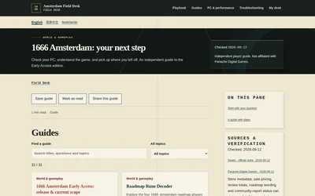
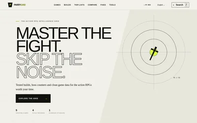
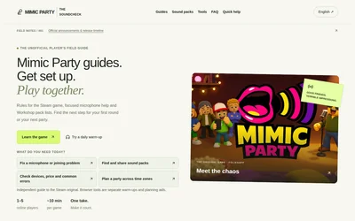
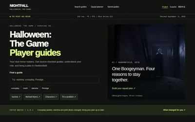
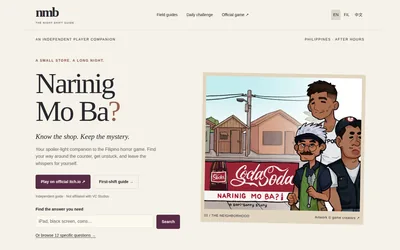
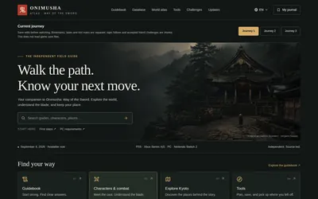
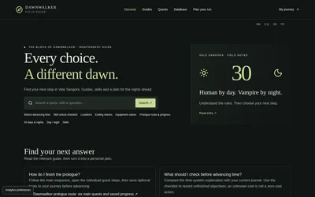
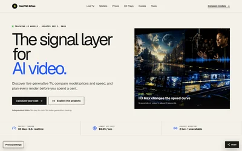

/42游戏与内容 1666 Amsterdam Field Desk《1666: Amsterdam》三语攻略与排障工作台01 / 项目展墙
想法不止留在脑海里。
42 次把想法变成网址。每一个都是一人公司的一次出发：有持续打磨的，也有尝试后停下的。
42 / 42个项目

/41游戏与内容 ParryGridARPG 与 Soulslike 情报网格
/40游戏与内容 Mimic Party Soundcheck《Mimic Party》四语玩家指南与派对工具站
/39游戏与内容 Nightfall Halloween Guides《Halloween: The Game》三语生存攻略站
/38游戏与内容 Narinig Mo Ba? Guide菲律宾恐怖游戏轻剧透攻略站
/36游戏与内容 Onimusha Atlas鬼武者攻略与玩家日志
/35游戏与内容 Dawnwalker Field GuideDawnwalker 攻略与旅程规划
/34AI 产品 GenVid AtlasAI 视频模型与价格情报站 /33游戏与内容
Mortal Shell II WikiMS2 粉丝维基
/33游戏与内容
Mortal Shell II WikiMS2 粉丝维基
 /32实用工具
OxAlphaAI 模型证据站
/32实用工具
OxAlphaAI 模型证据站
 /31游戏与内容
The Sinking City 2 Field Guide克苏鲁侦探攻略站
/31游戏与内容
The Sinking City 2 Field Guide克苏鲁侦探攻略站
 /30创意实验
Chinamaxxing Online多语文化指南
/30创意实验
Chinamaxxing Online多语文化指南
 /29游戏与内容
HLLV Field ManualHLLV 越南战场手册
/29游戏与内容
HLLV Field ManualHLLV 越南战场手册
 /28创意实验
牛来牛来电影资料站
/28创意实验
牛来牛来电影资料站
 /27创意实验
CraveLoop全球美食点单模拟器
/27创意实验
CraveLoop全球美食点单模拟器
 /26实用工具
MatchaFilter照片抹茶滤镜校色
/26实用工具
MatchaFilter照片抹茶滤镜校色
 /25创意实验
burnt for you数字混音带制作器
/25创意实验
burnt for you数字混音带制作器
 /24游戏与内容
Polski Piłkarz Simulator波兰足球生涯模拟器
/24游戏与内容
Polski Piłkarz Simulator波兰足球生涯模拟器
 /23实用工具
DSH Field GuideDeepSeek 工具指南
/23实用工具
DSH Field GuideDeepSeek 工具指南
 /22实用工具
Remove Matcha Filter图片视频校色工具
/22实用工具
Remove Matcha Filter图片视频校色工具
 /21AI 产品
RSP EditorAI 同款照片生成器
/21AI 产品
RSP EditorAI 同款照片生成器
 /20AI 产品
AI ScannerAI 文本检测工具
/20AI 产品
AI ScannerAI 文本检测工具
 /19游戏与内容
Merge a Nuke! Guide核弹合成攻略站
/19游戏与内容
Merge a Nuke! Guide核弹合成攻略站
 /18游戏与内容
Shift at Midnight Guide午夜轮班攻略站
/18游戏与内容
Shift at Midnight Guide午夜轮班攻略站
 /17实用工具
竹知了竹蝉玩具模拟器
/17实用工具
竹知了竹蝉玩具模拟器
 /16创意实验
Cash Flow Lifestyle现金流理财桌游站
/16创意实验
Cash Flow Lifestyle现金流理财桌游站
 /15实用工具
HowManySleepsUntil睡眠倒计时工具
/15实用工具
HowManySleepsUntil睡眠倒计时工具
 /14实用工具
IsItDown网站宕机检测工具
/14实用工具
IsItDown网站宕机检测工具
 /13实用工具
CopyPlaintext纯文本粘贴工具
/13实用工具
CopyPlaintext纯文本粘贴工具
 /12游戏与内容
DragonSword Wiki龙剑觉醒社区 Wiki
/12游戏与内容
DragonSword Wiki龙剑觉醒社区 Wiki
 /11游戏与内容
SpiritVale WikiSpiritVale 社区 Wiki
/11游戏与内容
SpiritVale WikiSpiritVale 社区 Wiki
 /10创意实验
Rot CheckGen Alpha 趣味测试站
/10创意实验
Rot CheckGen Alpha 趣味测试站
 /09创意实验
Chinese Coins Atlas中国古钱币图鉴
/09创意实验
Chinese Coins Atlas中国古钱币图鉴
 /08游戏与内容
TaskbarHeroWikiTask Bar Hero 数据库
/08游戏与内容
TaskbarHeroWikiTask Bar Hero 数据库
 /07创意实验
All Wishes Come True八仙电影与民俗文化站
/07创意实验
All Wishes Come True八仙电影与民俗文化站
 /06实用工具
llmstxtllms.txt 实用指南
/06实用工具
llmstxtllms.txt 实用指南
 /05实用工具
CodexSkin.spaceCodex CLI TUI 指南站
/05实用工具
CodexSkin.spaceCodex CLI TUI 指南站
 /04游戏与内容
PalworldMapPalworld 坐标图谱
/04游戏与内容
PalworldMapPalworld 坐标图谱
 /03游戏与内容
FalloutDayFallout 76 攻略站
/03游戏与内容
FalloutDayFallout 76 攻略站
 /02游戏与内容
Build a Hooper篮球训练内容站
/02游戏与内容
Build a Hooper篮球训练内容站
 /01AI 产品
AIStoryNest睡前故事生成站
/01AI 产品
AIStoryNest睡前故事生成站
没有匹配记录，试试别的关键词或筛选。
02 / 创业日常
没有团队的规模，也要有公司的行动力。
一人公司不是把所有事硬扛下来，而是建立一套能持续创造价值的做事方式。
- 01
从需求出发，不等万事俱备
先找到一个值得解决的问题。时间和资源有限，就把力气用在用户最需要的那一步。
- 02
让 AI 放大一个人的行动力
研究、设计、开发、运营，一个人也能跑通。让 AI 接住重复工作，把判断、取舍和责任留给自己。
- 03
先上线，再用反馈走下一步
每次发布都是一次真实试验。听反馈、看使用，把有效的继续做，把走不通的及时停下来。
03 / 一人公司
把选择权，
一点点做回自己手里。
我是王子凡，正在实践 OPC 一人公司创业。这个页面记录着 42 次公开上线，也记录着我从想法走向真实市场的过程。
我想做的，是一家由自己掌舵、靠产品创造价值的小公司。保持好奇，认真解决问题，也为自己的选择负责。
下一次出发
有个想法？
一起把它做出来。
聊产品，聊 AI，聊一人公司的机会和难题。加微信时备注“一人公司”，说说你正在做什么，或者想解决什么问题。

微信号
wang1227928718